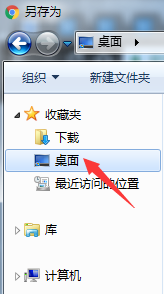

昨天误将chrome从任务栏解锁之后，竟然发现右键不再出现“将此程序锁定到任务栏”的选项，思来想去觉得可能和前几天删除了桌面快捷方式箭头有关，在网上搜索之后发现果然如此，在此进行整理。
网上教程一搜一大把，仍然先放上参考链接：
重新添加“将程序锁定到任务栏”选项
方法一
- 用win+R键调出运行窗口
依次输入以下三条命令：
1
2
3cmd /k reg add "HKEY_CLASSES_ROOT\lnkfile" /v IsShortcut /f
cmd /k reg add "HKEY_CLASSES_ROOT\piffile" /v IsShortcut /f
cmd /k taskkill /f /im explorer.exe & explorer.exe或者直接输入以下命令：
1
cmd /k reg add "HKEY_CLASSES_ROOT\lnkfile" /v IsShortcut /f & reg add "HKEY_CLASSES_ROOT\piffile" /v IsShortcut /f & taskkill /f /im explorer.exe & explorer.exe
方法二
新建一个文本文档，文档中输入以下内容：
1
2
3reg add "HKEY_CLASSES_ROOT\lnkfile" /v IsShortcut /f
reg add "HKEY_CLASSES_ROOT\piffile" /v IsShortcut /f
taskkill /f /im explorer.exe & explorer.exe将文档扩展名改为.bat，然后双击运行
按照上述方法设置之后，在任务栏程序上点击右键就会显示“将此程序锁定到任务栏”选项了。不过，此时会发现，已经被删除的桌面快捷方式箭头又会重新出现，因此也附上删除桌面快捷方式箭头的方法。
删除桌面快捷方式箭头
方法一
- 用win+R键调出运行窗口
- 直接输入以下命令：
1 | cmd /k reg delete "HKEY_CLASSES_ROOT\lnkfile" /v IsShortcut /f & taskkill /f /im explorer.exe & start explorer.exe |
- 或者依次输入以下命令：
1
2
3cmd /k reg delete "HKEY_CLASSES_ROOT\lnkfile" /v IsShortcut /f
cmd /k reg delete "HKEY_CLASSES_ROOT\piffile" /v IsShortcut /f [该命令可选]
cmd /k taskkill /f /im explorer.exe & explorer.exe
方法二
新建一个文本文档，文档中输入以下内容：
1
2
3reg delete "HKEY_CLASSES_ROOT\lnkfile" /v IsShortcut /f
reg delete "HKEY_CLASSES_ROOT\piffile" /v IsShortcut /f
taskkill /f /im explorer.exe & explorer.exe将文档扩展名改为.bat，然后双击运行
然而，按照上述方法设置之后，桌面快捷方式的箭头被删掉了，可是“将此程序锁定到任务栏”选项又会消失不见。
两种功能不能同时生效
能够看到，修改注册表lnkfile和piffile的IsShortcut键这种方法，只能实现一个功能而必须舍弃另一个功能，这在实际使用中真的是十分不便。
同时，还有一个副作用，删除桌面快捷方式箭头的同时，“另存为”资源管理器中的“桌面”快捷选择项也会不见，如图：

为了解决问题，再次搜索，果然发现了二者可以同时生效的方法。
解决方法
这种方法的主要思想是：并不是真正意义上去掉箭头，而只是使用Win7自带的图标库中的透明图标代替快捷方式的箭头，这样就实现了隐藏箭头的效果，很方便很快捷。
首先需要了解以下内容：
1. Window图标库
Windows 系统自己的默认图标（回收站、计算机、控制面板等等）都保存在系统盘（一般是C盘）的Windows/System32 文件夹里面的一些DLL文件里面——imageres.dll、shell32.dll 和 moricons.dll 等几个系统文件。
- moricons.dll：XP以前老风格图标；
- shell32.dll：XP常用图标；
- imageres.dll：Vista和Win7风格的图标。
其中，imageres.dll的196号、shell32.dll的50~53号（其他图标资源编号对照表，详见此处），都是透明图标。
2. Shell Icons
注册表[HKEY_LOCAL_MACHINE\SOFTWARE\Microsoft\Windows\CurrentVersion\Explorer]中，”Shell Icons”子项的29表项，代表的就是快捷方式箭头：1
29 SI_SHORTCUT Shortcut overlay (small arrow)
关于Shell Icons的其他各个表项值介绍，详见此处。
方法一
该方法使用了注册表方式，利用shell32.dll的50号透明图标进行修改。
- 新建一个文本文档，文档中输入以下内容：
1 | [HKEY_CLASSES_ROOT\lnkfile] |
- 将文档扩展名改为.reg，然后双击运行写入注册表
- 运行以下命令重启资源管理器，或者注销一次，则会生效
1
taskkill /f /im explorer.exe & explorer.exe
方法二
该方法的原作者巧妙使用了imageres.dll的196号透明图标。
- 去掉快捷方式箭头的批处理文件 DeleteArrow.bat（代码解释可见原博文）
1 | reg add "HKEY_LOCAL_MACHINE\SOFTWARE\Microsoft\Windows\CurrentVersion\Explorer\Shell Icons" /v 29 /d "%systemroot%\system32\imageres.dll,196" /t reg_sz /f |
- 恢复快捷方式箭头的批处理文件 RecoverArrow.bat
1
2
3
4
5
6reg delete "HKEY_LOCAL_MACHINE\SOFTWARE\Microsoft\Windows\CurrentVersion\Explorer\Shell Icons" /v 29 /f
taskkill /f /im explorer.exe
attrib -s -r -h "%userprofile%\AppData\Local\iconcache.db"
del "%userprofile%\AppData\Local\iconcache.db" /f /q
start explorer
pause
至此，大功告成。